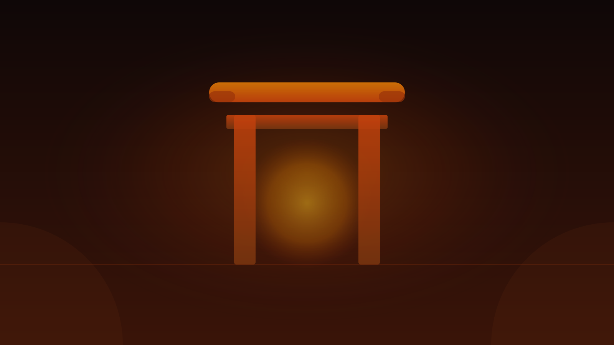
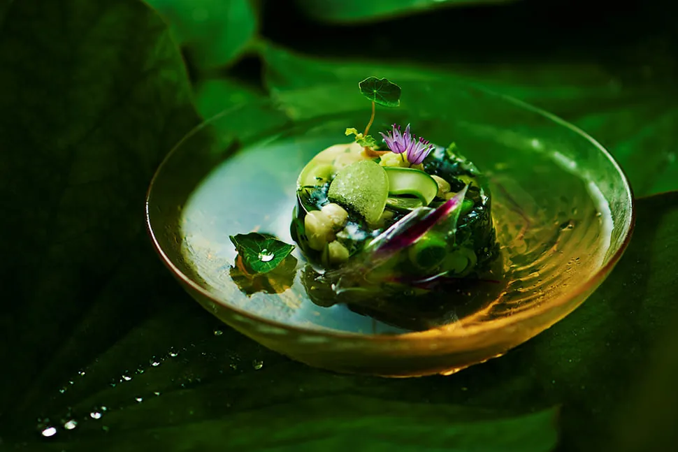
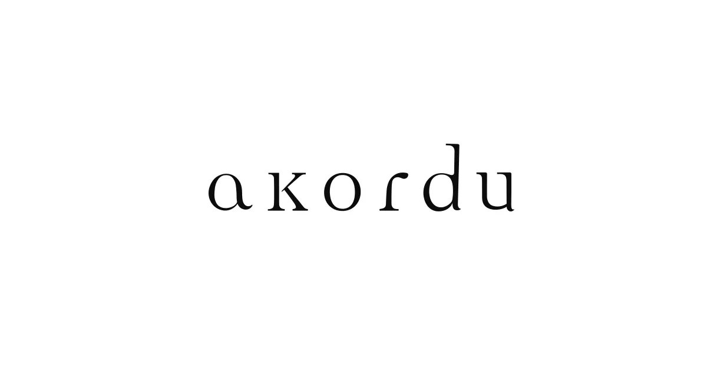
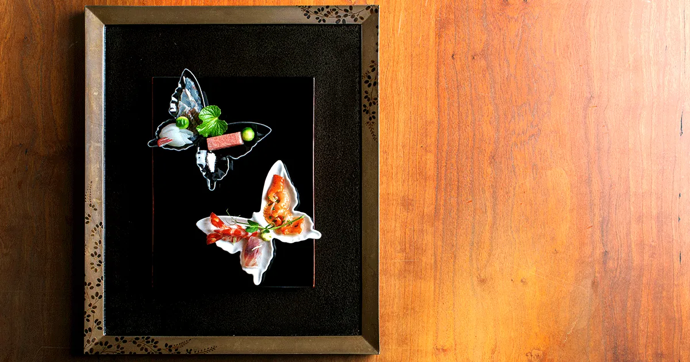
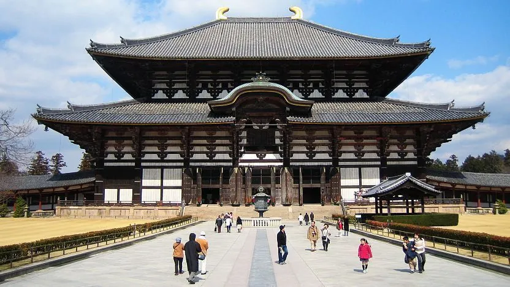
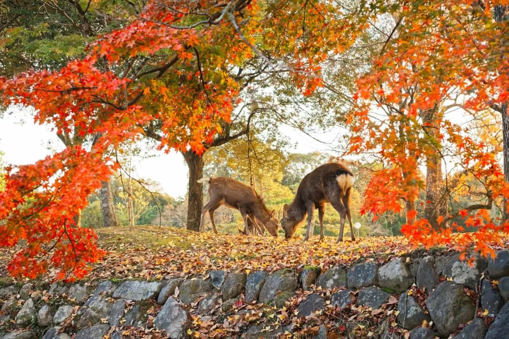

All four 2-star restaurants except Hanagaki sit within walking distance of Kintetsu Nara Station. The dinner address becomes the dinner neighborhood — and that shapes where your afternoon gravitates. [1]





Rainy season means umbrella-mandatory mornings, but Yatadera's hydrangeas peak precisely now (early June–early July). The crowds are thinner than cherry-blossom season, the deer park is green, and a thatched teahouse in the rain sounds good. Embrace it.
Indoor fallback for heavy rain: Nara National Museum — specialises in Buddhist statuary. Open 9:00–17:00, closed Monday. [21]
| From | Service | Time | Fare |
|---|---|---|---|
| Kyoto | Kintetsu express | 45 min | ¥760 |
| Kyoto | Kintetsu ltd. exp. | 35 min | ¥1,280 |
| Kyoto | JR Miyakoji | 45 min | ¥720 (Pass) |
| Osaka Namba | Kintetsu rapid | 39 min | ¥680 |
| Osaka Namba | Kintetsu ltd. exp. | 34 min | ¥1,200 |
| Osaka stn. | JR Yamatoji | 45 min | ¥840 (Pass) |
Take Kintetsu unless you hold a JR Pass — its Nara terminus is underground, steps from the park entrance. JR Nara requires a 15–20 min walk west. [28]